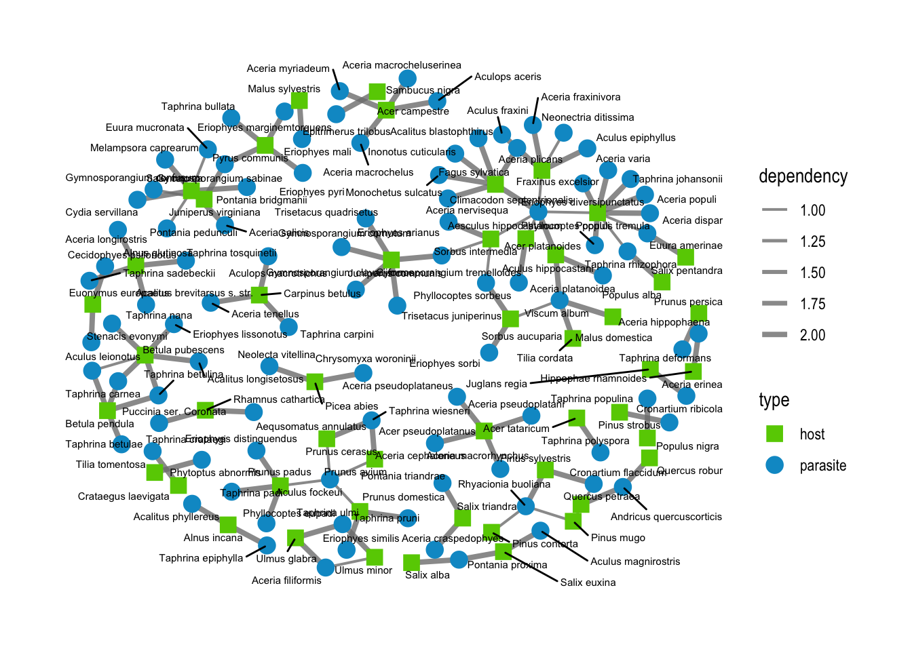

library(tidyverse)
library(bipartite)
library(tidygraph)
library(ggraph)SBDI_tree_nets
Exploring the interaction data from Artdatabankens report on species interactions with focus on trees.
Read interaction and taxonomic data.
# interaction data (fix names that start with space)
raw_data <- read.table("data/report_data.txt", sep = "\t", header = T, fileEncoding = "ISO-8859-1") %>%
mutate(Scientificname = str_replace(Scientificname,"^ ",""),
VärdSciName = str_replace(VärdSciName, "ë", "e"))
# tree taxonomic data from the report's appendix 2
tree_taxo <- read.csv("data/tree_taxonomy.csv") %>%
filter(Taxonomic.rank %in% c("Genus", "Species")) %>%
rename(Species = "Scientific.name") %>%
mutate(Species = str_replace(Species, "ë", "e"),
Genus = str_extract(Species, "^\\w+"), .after = Species)
tree_spp <- tree_taxo %>%
filter(Taxonomic.rank == "Species") %>%
pull(Species) %>%
sort()
tree_genera <- tree_taxo %>%
pull(Genus) %>%
unique() %>%
sort()
# attacker taxonomic data
attacker_taxo <- raw_data %>%
select("Scientificname","Family", "OrganismGroup") %>%
unique() %>%
rename(Species = "Scientificname") %>%
mutate(Genus = str_extract(Species, "^\\w+"), .after = Species)Interactions with trees
data_trees <- filter(raw_data, VärdSciName %in% tree_taxo$Species) %>%
select("Scientificname", "VärdSciName", "Nyttjande", "blankettnamn", "tal1") %>%
rename("parasite" = "Scientificname",
"host" = "VärdSciName",
"type" = "Nyttjande",
"tree_part" = "blankettnamn",
"dependency" = "tal1") %>%
unique()
data_trees_spp <- data_trees %>%
filter(host %in% tree_spp)
data_trees_genus <- data_trees %>%
mutate(host_genus = str_extract(host, "^\\w+"), .after = host) %>%
select(-host) %>%
unique()
#setdiff(data_trees_genus$host_genus, tree_genera)
#setdiff(tree_genera, data_trees_genus$host_genus)
# number of attackers by type of interaction
table(data_trees$type) %>% sort(decreasing = T)
Livsrum Växtplats Föda
5578 4152 3798
Underlag/fastsittande NULL Mykorrhiza
3290 2427 2030
Parasitism
257 table(data_trees$tree_part) %>% sort(decreasing = T)
Ved och bark Växtdelar, ej ved
11912 4489
Blad/barr Barken
988 943
Dött träd Finare rötter och rottrådar
663 573
Levande träd Vedens yta
377 176
Stam Grenar
159 86
Veden, inuti Skott
84 63
Växtsaft Mycket grov ved (> 40 cm)
56 52
Trädbas Frukt
51 44
Under barken Knoppar
44 41
Grov ved (20 - 40 cm) Nyligen dött träd
38 38
Framskridet nedbrytningsstadium (ved) Förna
33 32
Hålighet i träd Måttligt nedbruten (ved)
32 29
Försvagat träd Frö
28 28
Blomrelaterade delar Stående ved
27 27
Gröna växtdelar Medelgrov ved (5 - 20 cm)
26 26
Mulm i trädhålighet Liggande ved
24 23
Trädrötter, vedartade Gallring
22 21
Friskt träd Savflöde
20 18
Svampar och lavar Begynnande nedbrytning (ved)
18 17
Liggande ved med markkontakt Pollen
17 14
Trädhålighet Starkt nedbruten (ved)
14 13
Klen ved (1 - 5 cm) Kottar
12 11
Stubbe Nektar
11 10
Solexponerad ved Mycket klen ved (0 - 1 cm)
9 8
Döda växter Fruktkropp
6 6
Fuktig ved Högstubbe
6 6
Multnande växtdelar Antal grova träd
6 4
Blött (vattenmättat) ved Brandpåverkan
4 4
Plockhuggning eller blädning Senvuxet träd
4 4
Träddel Trädskiktets krontäckning
4 4
Artificiella högstubbar (Substrat) Röjning av sly o buskar
3 3
Taggar, törnen Tidvis/delvis solbelyst ved
3 3
Gallbildning som substrat Solexponerad planta
2 2
Vitröta Betad planta
2 1
Gångar i ved Grodd
1 1
Hamling, beskärning av träd (trädtukt) Kambium
1 1
Liggande ved utan markkontakt Sporer
1 1
Tamdjur i skogen Ung växande planta
1 1 Parasites
Plot tree species x parasite species network
data_para_spp <- filter(data_trees_spp, type == "Parasitism")
# n_distinct(data_para_spp$parasite)
# n_distinct(data_para_spp$host)
# nrow(data_para_spp)
# n_distinct(data_para_spp)
data_para_spp %>%
group_by(parasite, host) %>%
summarise(n = n()) %>%
filter(n > 1)# A tibble: 19 × 3
# Groups: parasite [14]
parasite host n
<chr> <chr> <int>
1 Andricus quercuscorticis Quercus petraea 2
2 Andricus quercuscorticis Quercus robur 2
3 Taphrina betulina Betula pendula 2
4 Taphrina betulina Betula pubescens 2
5 Taphrina bullata Pyrus communis 2
6 Taphrina carnea Betula pubescens 2
7 Taphrina carpini Carpinus betulus 2
8 Taphrina deformans Prunus persica 2
9 Taphrina epiphylla Alnus incana 2
10 Taphrina johansonii Populus tremula 2
11 Taphrina padi Prunus padus 2
12 Taphrina pruni Prunus domestica 2
13 Taphrina rhizophora Populus alba 2
14 Taphrina tosquinetii Alnus glutinosa 2
15 Taphrina wiesneri Prunus avium 2
16 Viscum album Acer platanoides 2
17 Viscum album Malus domestica 2
18 Viscum album Sorbus aucuparia 2
19 Viscum album Tilia cordata 2# remove interactions that are recorded as both 1 and 2
duplicates_para <- data_para_spp %>%
select(-tree_part) %>%
unique() %>%
group_by(parasite, host) %>%
summarise(n = n()) %>%
filter(n > 1)
# there are none, just different tree parts
data_para_spp_simple <- data_para_spp %>%
select(-tree_part) %>%
unique()# with ggraph
nodes_para_spp <- data.frame(name = c(unique(data_para_spp_simple$parasite), unique(data_para_spp_simple$host)),
type = c(rep("parasite",n_distinct(data_para_spp_simple$parasite)),
rep("host",n_distinct(data_para_spp_simple$host))))
para_spp_graph <- tbl_graph(nodes = nodes_para_spp, edges = data_para_spp_simple)
ggraph(para_spp_graph, layout = "kk") +
geom_edge_link(aes(edge_width = dependency), color = "grey50", alpha = 0.8) +
geom_node_point(aes(shape = type, color = type), size = 4) +
geom_node_text(aes(label = name), repel = T, size = 2) +
scale_color_manual(values = c("chartreuse3","deepskyblue3")) +
scale_shape_manual(values = c("square", "circle")) +
scale_edge_width(range = c(0.7,1.4)) +
theme_graph()
ggraph(para_spp_graph, layout = "auto") +
geom_edge_link(aes(edge_width = dependency), color = "grey50", alpha = 0.8) +
geom_node_point(aes(shape = type, color = type), size = 3) +
scale_color_manual(values = c("chartreuse3","deepskyblue3")) +
scale_shape_manual(values = c("square", "circle")) +
scale_edge_width(range = c(0.7,1.4))# with bipartite
adjm_para_spp <- frame2webs(mutate(data_para_spp_simple, webID = 1), varnames = c("host","parasite", "type", "dependency"))[[1]]
#plotweb(adjm_para_spp, text.rot = 90, y.lim = c(0, 2))
visweb(adjm_para_spp, type = "diagonal", labsize = 4)# modularity
mod_para <- computeModules(adjm_parasitism)
plotModuleWeb(mod_para)Plot tree genera x parasite species network
data_para_gen <- filter(data_trees_genus, type == "Parasitism")
n_distinct(data_para_gen$parasite)[1] 159n_distinct(data_para_gen$host_genus)[1] 25nrow(data_para_gen)[1] 234n_distinct(data_para_gen)[1] 234data_para_gen %>%
group_by(parasite, host_genus) %>%
summarise(n = n()) %>%
filter(n > 1)# A tibble: 49 × 3
# Groups: parasite [44]
parasite host_genus n
<chr> <chr> <int>
1 Aceria filiformis Ulmus 2
2 Aculus fockeui Prunus 2
3 Aculus leionotus Betula 2
4 Andricus callidoma Quercus 2
5 Andricus curvator Quercus 2
6 Andricus fecundatrix Quercus 2
7 Andricus inflator Quercus 2
8 Andricus quadrilineatus Quercus 2
9 Andricus quercuscorticis Quercus 2
10 Andricus quercusradicis Quercus 2
# ℹ 39 more rows# remove interactions that are recorded as both 1 and 2
duplicates_para <- data_para_gen %>%
select(-tree_part) %>%
unique() %>%
group_by(parasite, host_genus) %>%
summarise(n = n()) %>%
filter(n > 1)
# there are none, just different tree parts
data_para_gen_simple <- data_para_gen %>%
select(-tree_part) %>%
unique()# with ggraph
nodes_para_gen <- data.frame(name = c(unique(data_para_gen_simple$parasite), unique(data_para_gen_simple$host_genus)),
type = c(rep("parasite",n_distinct(data_para_gen_simple$parasite)),
rep("host",n_distinct(data_para_gen_simple$host_genus))))
para_gen_graph <- tbl_graph(nodes = nodes_para_gen, edges = data_para_gen_simple)
ggraph(para_gen_graph, layout = "kk") +
geom_edge_link(aes(edge_width = dependency), color = "grey50", alpha = 0.8) +
geom_node_point(aes(shape = type, color = type), size = 3) +
geom_node_text(aes(label = name), repel = T, size = 2) +
scale_color_manual(values = c("chartreuse3","deepskyblue3")) +
scale_shape_manual(values = c("square", "circle")) +
scale_edge_width(range = c(0.7,1.4)) +
theme_graph()ggraph(para_gen_graph, layout = "sugiyama") +
geom_edge_link(aes(edge_width = dependency), color = "grey50", alpha = 0.8) +
geom_node_point(aes(shape = type, color = type), size = 3) +
#geom_node_text(aes(label = name), angle = 90, hjust = 1) +
scale_color_manual(values = c("chartreuse3","deepskyblue3")) +
scale_shape_manual(values = c("square", "circle")) +
scale_edge_width(range = c(0.7,1.4)) +
theme_graph()# with bipartite
adjm_para_gen <- frame2webs(mutate(data_para_gen_simple, webID = 1), varnames = c("host_genus","parasite", "type", "dependency"))[[1]]
#plotweb(adjm_para_gen, text.rot = 90, y.lim = c(0, 2))
#visweb(adjm_para_gen, type = "diagonal", labsize = 4)